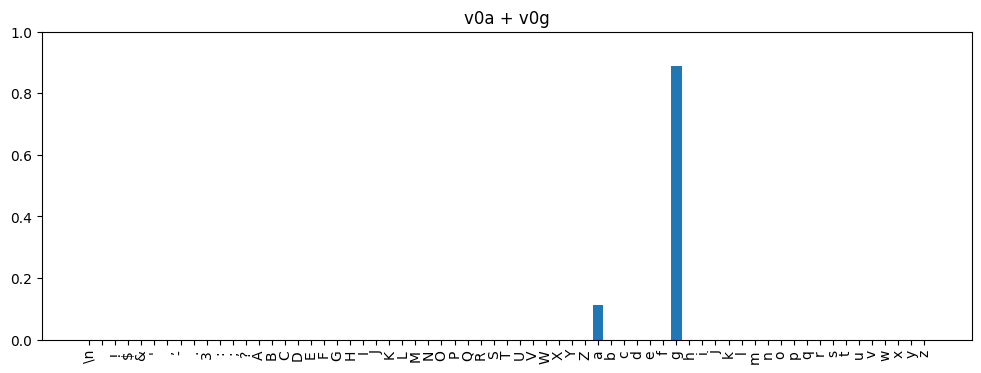
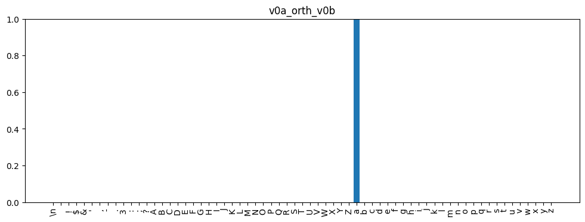
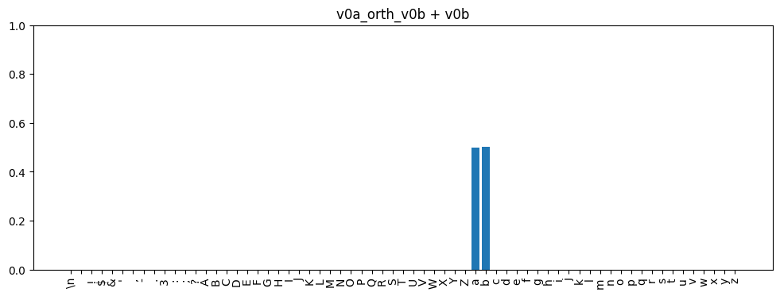
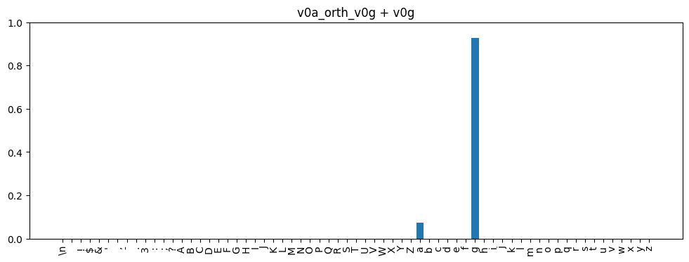
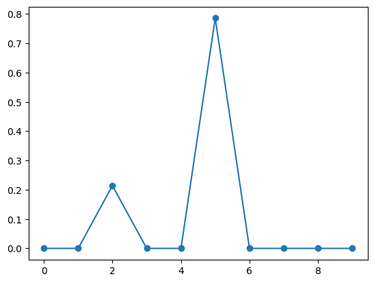
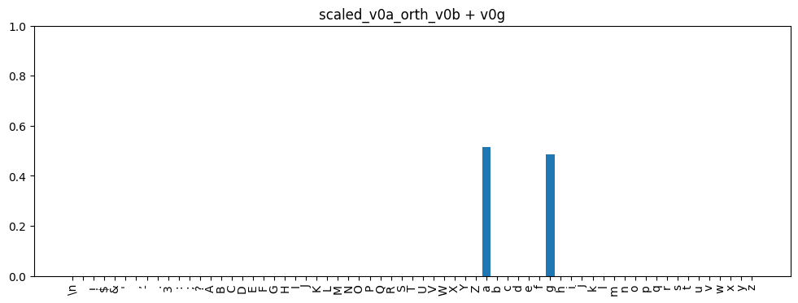

environment = get_environment()
print(f"environment is {environment.name}")environment is local_macenvironment is local_macdevice = 'cuda' if torch.cuda.is_available() else 'cpu'
ts = TinyShakespeareDataSet(cache_file=environment.code_root / 'nbs/artifacts/input.txt')
m, tokenizer = create_model_and_tokenizer(
saved_model_filename=environment.code_root / 'nbs/artifacts/shakespeare-20231112.pt',
dataset=ts,
device=device,
)
_, val_data = split_text_dataset(ts.text, tokenizer, train_pct=0.9, device=device)
encoding_helpers = EncodingHelpers(tokenizer, device)
accessors = TransformerAccessors(m, device)# Load embeddings for 'a' and 'b'
embs_a = torch.load(learned_embeddings_dir / 'no_blocks' / f'{filename_for_token("a")}.pt', map_location=device)[:, -1, :]
embs_b = torch.load(learned_embeddings_dir / 'no_blocks' / f'{filename_for_token("b")}.pt', map_location=device)[:, -1, :]
# Perform SVD on both
_, _, Va = torch.linalg.svd(embs_a)
_, _, Vb = torch.linalg.svd(embs_b)
# Grab the first singular vector from each and adjust the sign.
v0a = adjust_singular_vector_sign(Va[0], embs_a)
v0b = adjust_singular_vector_sign(Vb[0], embs_b)At this point v0a and v0b serve as approximations for the token spaces for a and b respectively.
Plot them just as a sanity check.
We’d expect that if we add v0a and v0b, we’d get a distribution that predicted 50% for ‘a’ and 50% for ‘b’. But alas:
They’re not quite even. And there are worse examples:
# Load embeddings for 'g'
embs_g = torch.load(learned_embeddings_dir / 'no_blocks' / f'{filename_for_token("g")}.pt', map_location=device)[:, -1, :]
# Perform SVD
_, _, Vg = torch.linalg.svd(embs_g)
# Grab the first singular vector from each and adjust the sign.
v0g = adjust_singular_vector_sign(Vg[0], embs_g)
plot_probs(v0a + v0g, title='v0a + v0g')
Three factors contribute:
v0a has a small component that points in the direction of v0b, the sum results in an overweighting of b.v0a, the logit for a is ~18.2. The logit for b from v0b is ~19.5.1 is not something we can much about without expending a lot more resources to find a better approximation. But 2 and 3 we can compensate for.
Let’s look at the orthogonality of the vectors for b and g relative to a:
If they were orthogonal, we’d expect the dot products to be zero. They are close to zero, but \(v0a \cdot v0b\) is an order of magnitude closer to zero than \(v0a \cdot v0g\).
Let’s see what happens if we adjust v0a to make it orthogonal to v0b by removing the component that’s in line with v0b:
v0a_orth_v0b = v0a - v0a.dot(v0b) * v0b
plot_probs(v0a_orth_v0b, title='v0a_orth_v0b')
plot_probs(v0a_orth_v0b + v0b, title='v0a_orth_v0b + v0b')

After removing the component in the direction of v0b, what’s left of v0a still results in a distribution that selects a with near certainty. And when we add them, we get much closer to a 50/50 split. Let’s try the same with v0g:
v0a_orth_v0g = v0a - v0a.dot(v0g) * v0g
plot_probs(v0a_orth_v0g, title='v0a_orth_v0g')
plot_probs(v0a_orth_v0g + v0g, title='v0a_orth_v0g + v0g')
Sadly, this doesn’t help, and in fact seems to make things a little worse. We’ve got to look at the logit magnitude too.
Let’s look at what logit values are produced from each of the vectors:
logit_for_char = lambda v, char: accessors.logits_from_embedding(unsqueeze_emb(v))[0, 0, tokenizer.stoi[char]]
(
logit_for_char(v0a, 'a'),
logit_for_char(v0b, 'b'),
logit_for_char(v0g, 'g'),
)(tensor(18.1589), tensor(19.5089), tensor(21.7159))For a, the relevant logit is ~18.2 vs ~19.5 for b and ~21.7 for g. These may seem like small differences but the softmax function really exaggerates them. We can see this with some sample data where all the elements are -1 except for index 2 which is 18.2 and index 5 which is 19.5:
test_data = torch.zeros(10)
test_data = test_data - 1
test_data[2] = 18.2
test_data[5] = 19.5
_ = plt.plot(F.softmax(test_data, dim=0).numpy(), '-o')
The effect when it’s 18.2 vs 21.7 (g’s logit value) is even more stark:
So these small difference have a big impact. What happens if we compensate for them?
In a sense, a bigger logit value for one embedding vs another means the model is more “sensitive” to that embedding. In the sum, we’d need more of the embedding the model is less sensitive to to end up with a 50/50 distribution.
We can try scaling v0a_orth_v0g by the ratio of the logit values:
scaled_v0a_orth_v0b = (logit_for_char(v0g, "g") / logit_for_char(v0a_orth_v0g, "a")) * v0a_orth_v0g
plot_probs(
scaled_v0a_orth_v0b + v0g,
title="scaled_v0a_orth_v0b + v0g",
)
This results in a much more even distribution. It’s still not quite perfectly 50/50 and I suspect the remaining error is due to the imperfect approximations.